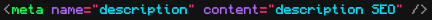

Le SEO c’est l’ensemble des techniques visant à améliorer votre visibilité sur internet.
Le SEO permet un référencement naturel gratuit et durable
contrairement au SEA (Search Engine Advertising) qui est un référencement payant pour mettre votre
site web en
avant via de la publicité ou une annonce.
Lorsqu’un utilisateur effectue une requête sur un moteur de recherche comme Google, Qwant, Bing, Yahoo, Lilo, startpage, des nombreux résultats sont affichés par le moteur de recherche triés selon leur pertinence.
Une recherche Google sur le mot « SEO » renvoie environ 1 160 000 000 résultats. Au vu du très grand nombre de réponses, il est essentiel d’avoir un bon positionnement pour espérer obtenir du trafic vers son site web.
Le positionnement correspond à la place de votre site web dans le moteur de recherche lors d’une requête. Par exemple, votre site peut apparaître en page 2, 2éme résultat.
Il faut garder à l’esprit que 75% des utilisateurs ne vont pas plus loin que la première page et que la première réponse attire environ 33% des http://clics.La mise en pratique des techniques SEO est une obligation si vous voulez générer du trafic vers votre site web
Mes conseils pour améliorer votre référencement naturel sont principalement issus des guides Google pour les développeurs et webmasters.
Google représente 75% des recherches mondiales et 90% des recherches effectuées en France. Si vous souhaitez être visible sur internet, vous devez être référencé et bien positionné en priorité sur le moteur de recherche Google. De plus, ces conseils et techniques sont aussi valables pour les autres moteurs de recherches.
Avant d’améliorer le positionnement de son site web dans un moteur de recherche, il faut déjà être
indexé dans
celui-ci.
- Rendez-vous sur : https://www.google.com/
- Tapez la recherche : site:mon-site.com (attention : il faut remplacer mon-site.com, par l’url de
votre site
web).
Si vous obtenez un résultat, vous êtes indexé, vous pouvez continuer, sinon rendez-vous sur le guide
Google
pour
trouver la raison de votre non indexation.
Pour aller plus loin :
https://developers.google.com/search/docs/beginner/seo-starter-guide?hl=fr#areyouongoogle
La balise HTML <title> indique aux visiteurs du site web et aux moteurs de recherche le thème d’une page web spécifique. Cette balise est une métadonnée, elle doit être définie dans la partie
de votre page html.
La balise méta <description> fournit un résumé du contenu de la page web en 1 ou 2 phrases
voire un court
paragraphe.
C’est une balise importante puisqu’elle peut être utilisée comme extrait affiché à l’internaute dans
le moteur de
recherche.
De plus le contenu et les mots clés utilisés dans cette description participe à la qualité de votre
référencement
sur le thème traité dans la page.
https://developer.mozilla.org/fr/docs/Learn/HTML/Introduction_to_HTML/The_head_metadata_in_HTML
Exemple du code HTML pour cette page :

Pour aller plus loin :
https://developers.google.com/search/docs/beginner/seo-starter-guide?hl=fr#descriptionmeta
Pour que le robot indexe au mieux votre page, il doit comprendre clairement le sujet traité.
La balise de titre HTML permet d’indiquer les sujets importants. Les titres doivent donc être
pertinents et
précis.
Il faut garder en mémoire que vous écrivez avant tout du contenu pour un humain et non le robot
d’indexation.
Vous devez mettre en place un plan structuré et hiérarchisé par vos titres afin de guider et de
faciliter la
compréhension du thème pour le visiteur.
Attention, il faut utiliser les balises de titre de façon logique comme dans un plan avec des
parties, sous
parties par exemple :
L’arborescence de votre site web impactera les URL de celui-ci.
Privilégier un nommage compréhensible pour l’homme et décrivant au mieux la ressource.
Par exemple un dossier « produits » contenant des dossiers « chaussures-homme », « chaussures-femme
» apporte de
l’information sur le contenu pour les robots et les utilisateurs.
L’utilisateur verra dans la barre d’adresse du navigateur web :
https://example.com/produits/chaussures-homme/
Les URL simples informent sur le contenu.
Pour aller plus loin :
https://developers.google.com/search/docs/beginner/seo-starter-guide?hl=fr#hierarchy
Fil d’Ariane
https://developers.google.com/search/docs/beginner/seo-starter-guide?hl=fr#usebreadcrumbs
Contenu à développer
Pour aller plus loin :
https://developers.google.com/search/docs/beginner/seo-starter-guide?hl=fr#images
Il faut veiller à ce que votre site web respecte les normes et bonnes pratiques du web, notamment
celles du
W3C.
Par exemple pour vérifier que votre code HTML est valide : https://validator.w3.org/
Il est aussi obligatoire d’utiliser le protocole HTTPS pour le chiffrement des interactions entre
les internautes
et votre site Web.